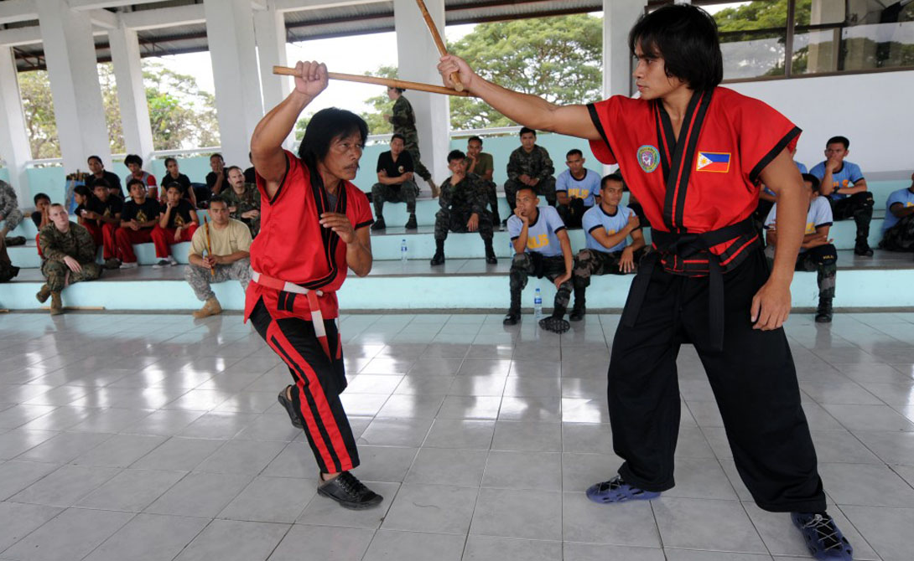

Арнис — филиппинское национальное боевое искусство, которое является чрезвычайно эффективным средством самообороны и может с успехом применяться для самозащиты от безоружного и вооруженного противника в современной жизни.

История возникновения Арнис.
Арнис возникло из ряда различных боевых искусств стран. На его становление оказали влияние боевые искусства народов Индии, испанские фехтование, бой на палках и ножевой бой, пенчак-силат, ушу, окинава-тэ, кэндо, дзю-дзюцу и другие боевые искусства. Историки относят зарождение истоков филиппинских боевых искусств к 1-му тысячелетию н.э., когда Филиппины находились в сфере влияния суматранского государства Шривиджая. В те времена в Филиппинах поселилось большое количество малайцев, принесших с собой приличный вклад в культуру страны, в том числе и в боевые искусства. В середине 9 века в результате торговых связей Филиппин с Китаем боевые искусства страны дополнились техниками из китайского боевого искусства цюань-шу. Дальнейший период 14-15 века повлек за собой множество междуусобных войн, что дало мощный толчок развитию боевых искусств. Современные черты филиппинские боевые искусства (кали, арнис, экстрима) приобрели в 1500 годах с началом испанской экспансии и проникновением в страну боевого искусства ушу провинции Фуцзянь.
Приёмы и техника Арнис.
Арнис учит самозащите, которая сводится к тому, что прежде всего наносят удары по суставам вооружённой руки противника, а только потом поражают голову или корпус. Техника боя на палках, конечно, варьируется в зависимости от стиля, но во всех них она построена на четырех основных принципах: простота движений, их относительная прямолинейность, экономность, подбор таких приемов, которые идеально соответствуют телосложению и личностным особенностям данного человека. Помимо удушающих приемов запрещены болевые приемы на кисти рук, болевые в стойке, удары в суставы и внутреннюю часть бедра, удары в заднюю часть тела. Борьба в партере (в состоянии лежа) не оценивается судьями, чаще всего на нее дается не более 10 секунд, и если по истечении этого времени не произведено болевого приема, судья останавливает бой и поднимает спортсменов в стойку. Стили Арнис.